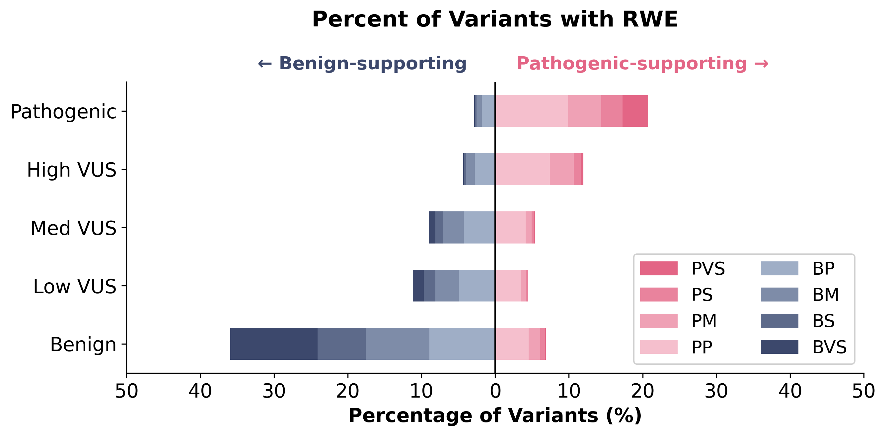

About this resource
Overview
Classifying variants of uncertain significance (VUS) is one of the central challenges in clinical genomics. This tool provides real-world evidence (RWE) derived from the Helix Research Network, UK Biobank, and All of Us datasets, quantified as likelihood ratios (LRs) within the ACMG/AMP Bayesian evidence framework. For each variant, the observed association with its disease phenotype is translated into a calibrated ACMG/AMP evidence category — from BVS through BP for benign-supporting, and PP through PVS for pathogenic-supporting evidence. Evidence can be combined with other variant-level criteria to support classification or reclassification.
Genes and Phenotypes
RWE is derived from disease-phenotype associations measured in biobank populations across 5 hereditary disease phenotypes.
- BRCA1
- BRCA2
- ATM
- BARD1
- CDH1
- CHEK2
- NF1
- PALB2
- PTEN
- RAD51C
- RAD51D
- TP53
- MLH1
- MSH2
- MSH6
- PMS2
- BAG3
- BRAF
- DSP
- FLNC
- LMNA
- PKP2
- PLN
- RBM20
- SCN5A
- TNNI3K
- TNNT2
- TTN
- TTR
- MYBPC3
- MYH7
- MYL2
- TNNI3
- APOB
- LDLR
- PCSK9
Performance
RWE categories are concordant with existing variant classifications and resolve a substantial fraction of the VUS carrier burden across all 36 genes.

Percentage of variants with benign-supporting (left) or pathogenic-supporting (right) RWE, stratified by pre-RWE ACMG Points and ClinVar classification. Evidence direction is concordant with prior classification across all variant groups.
.png)
Proportion of individuals carrying a VUS who receive an actionable reclassification (to B/LB or P/LP) based on RWE, per gene.